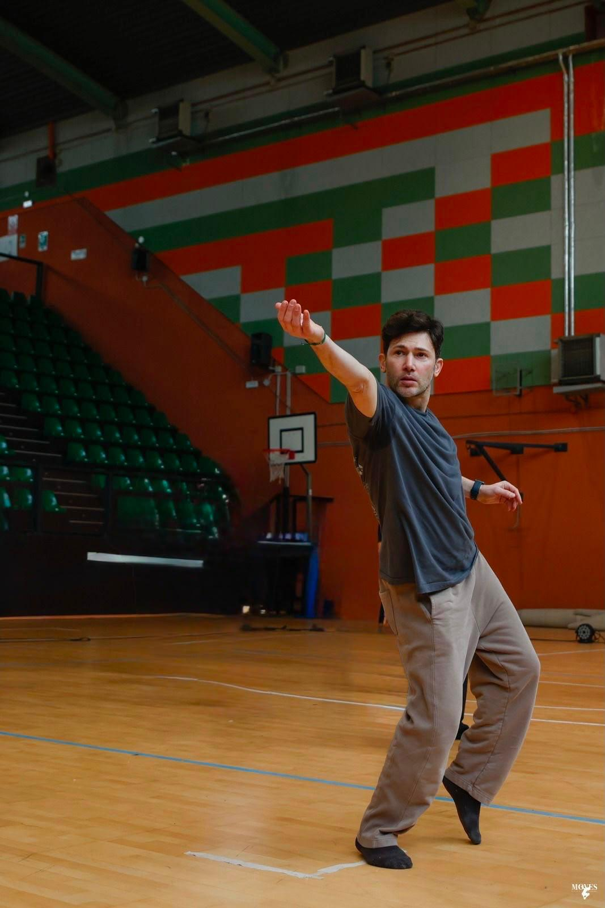
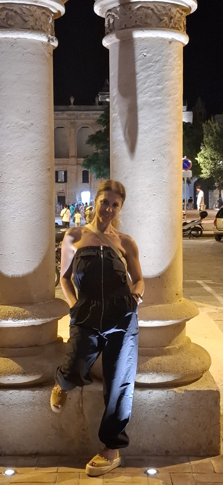
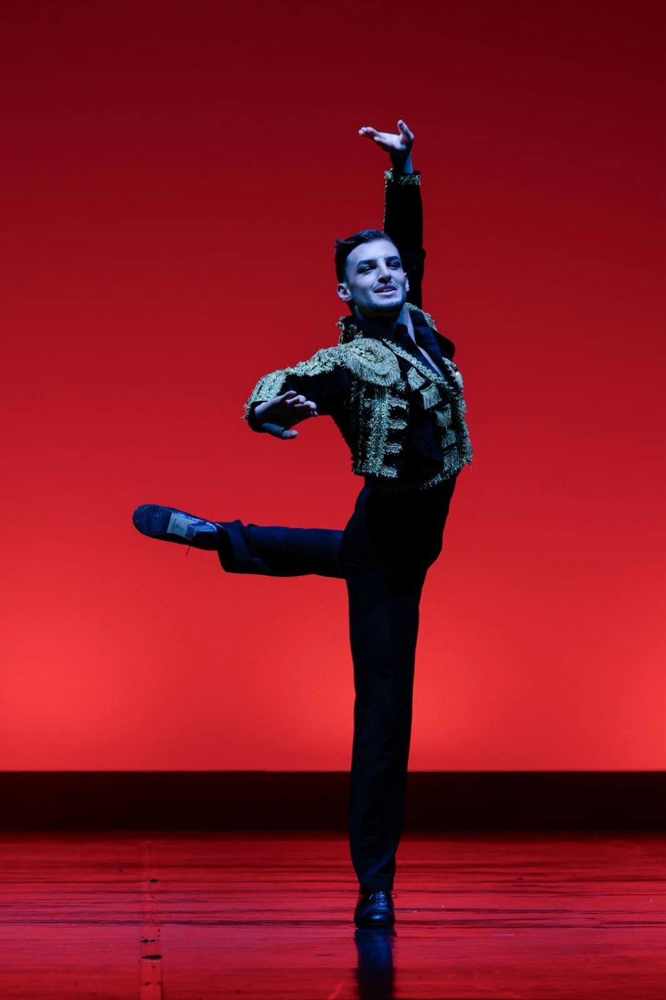
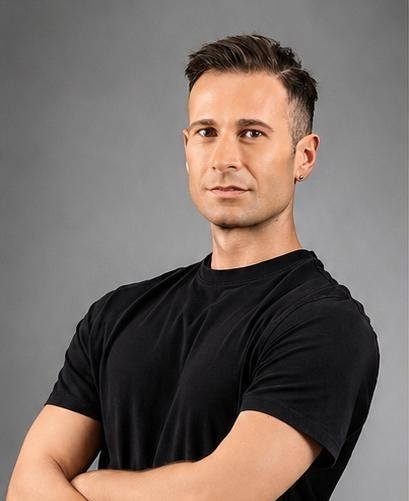
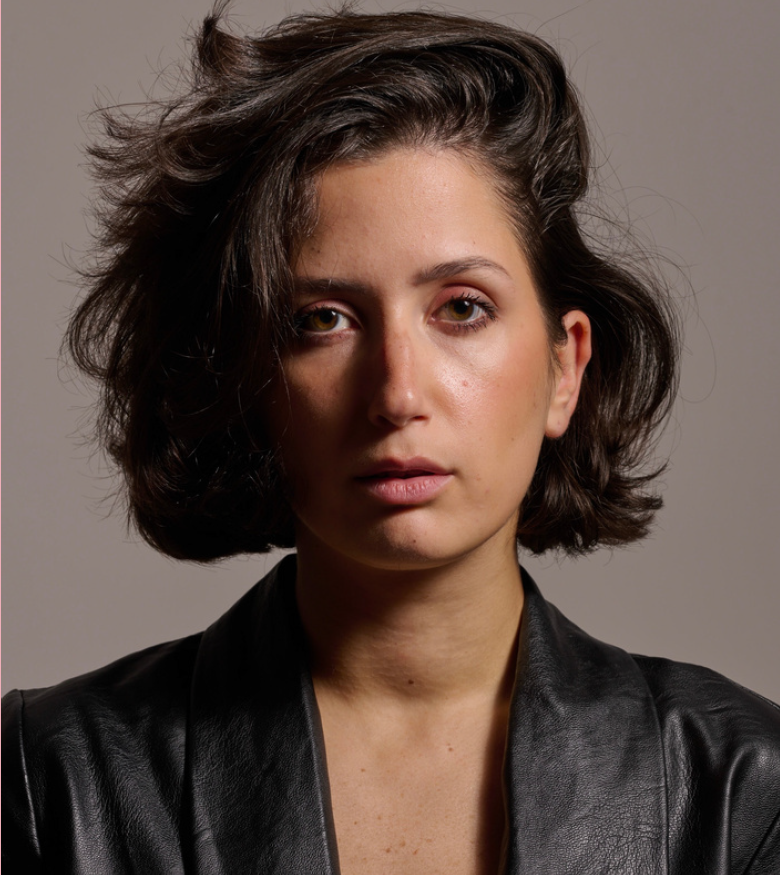
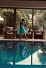
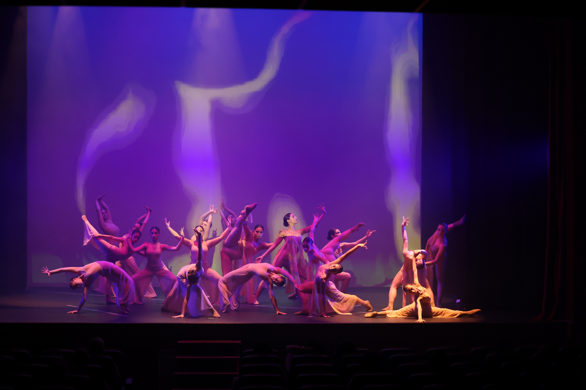

Luigi Fortunato
Danza Contemporanea
Diplomato presso A.N.D di Roma, ha collezionato importanti
esperienze negli studi Mediaset come ballerino professionista.
Frank Polvere
Hip Hop
Ballerino e coreografo italoamericano, è dotato di uno stile
tutto suo, contaminato da diverse discipline, in cui amalgama
tutto ciò che può muovere il corpo, lasciando che la musica ne
prenda l’anima. Ha ballato per artisti internazionali come Snoop
Dogg, Pitbull, Bob Sinclar e, nel luglio 2024, per il re della
dembow, El Alfa, durante la sua esperienza in Italia. Sono
numerosi anche gli artisti italiani con cui ha collaborato come
ballerino e coreografo, tra cui Cecilia Gayle, la regina del
Tipitipitero, El Pampa e artisti come Fred De Palma, The Kolors,
Guè, Luchè e Geolier. Ha lavorato in Rai e Mediaset come
ballerino ed è stato coreografo del programma “Domenica Live”,
condotto da Barbara D’Urso su Canale 5. Attualmente gira tutta
Italia come ballerino, coreografo e stagista, continuando a
portare il suo stile e la sua esperienza sui palcoscenici di
tutta Italia..

Sonia Pelosi
Pilates & Giocodanza®
Diplomata in danza classica e moderna alla Piccola Accademia, ha
perfezionato la sua formazione con maestri di rilievo
internazionale, tra cui il metodo russo Vaganova con la
professoressa Marit Bech e stage di tecnica classica con
Antonina Randazzo, docente della scuola di ballo del Teatro San
Carlo di Napoli. Ha ampliato le sue competenze anche nel fitness
e nel benessere, conseguendo diplomi come istruttrice di
Pilates, Zumba, Suspension Training e Kardio Kombat, ed è
Maestro Nazionale CSEN di Giocodanza®. Ha lavorato come
coreografa nei villaggi turistici Valtur e come insegnante
presso diverse palestre e accademie tra Benevento e Caserta,
oltre a essere stata esperta nel progetto ministeriale Agenda
Sud "Storie danzanti". Oggi è insegnante di danza classica e
moderna, Giocodanza® e Pilates, unendo tecnica accademica e
approccio al benessere del corpo.

Alessandro Cerqua
Modern Contemporary & Flamenco
Diplomato alla Fondanzione Lyceum Mara Fusco in classico modern
e flamenco dagli insegnati Mara Fusco, Laura Perez, Ferdinando
Arenella e Raffaella Caianiello. Continua i suoi studi a New
York in centri specializzati quali Steps on Broadway, peridance,
alvin ailey, Broadway dance center dove entra nel cast ufficiale
del celebre musical di Broadway “tony & tina’s wedding”;
Vincitore di premi internazionali e borse di studio
internazionali quali Youth American Grand Prix al David
Hitchcock theater New York, concurso flamenco puro a jerez de la
frontera, 5 borse di studio per i prestigiosi centri di danza
americani, premio Carlo Gesualdo e campamento flamenco 2025 con
30 insegnati di flamenco di fama mondiale. Ad oggi coreografo,
insegnate e ballerino professionista di modern e flamenco.

Marco Protano
Passo a due & Repertorio
Nato a Napoli, si è formato alla Scuola di Ballo del Teatro San
Carlo, diretta da Anna Razzi, lavorando con maestri di fama
internazionale come Elisabetta Terabust, Carmen Panader, Antonio
Vitale, Riccardo Riccardi, Luc Bouy e Ricardo Nuñez. Ha danzato
in produzioni della Scuola di Ballo del San Carlo come "La Bella
Addormentata", "La Favola di Biancaneve" e "Il Principe Igor", e
ha collaborato con la Compagnia di Balletto diretta da Mara
Fusco e con quella diretta da Bruno Fusco, esibendosi anche a
Washington presso la Casa Italiana. Dal 2019 approfondisce ogni
anno il Metodo Vaganova con un Master di Alta Formazione a
Firenze, studiando con Marina Vasilieva, Presidente
dell'Accademia Vaganova di San Pietroburgo. Dal 2013 dirige,
insieme a Martina Libro, il Centro Danza di Napoli, dedicandosi
alla formazione classica e moderna delle nuove generazioni di
danzatori.

Claudia Lazzari
Heels
Diplomata in danza e formatasi tra Scienze della Comunicazione e
Corporate Communication e Media all'Università di Salerno, con
un Master in Cinema e Tv all'UNISOB, ha costruito un percorso
artistico che intreccia danza, recitazione e scrittura. Ha
danzato nei corpi di ballo di spettacoli e produzioni di
rilievo, tra cui il Carmen Russo Show, "Flashdance Il Musical"
per la regia e coreografia di Enzo Paolo Turchi, e le produzioni
di Massimiliano Gallo "Anni '90" e "Vesuvio: The Legend of Love"
con le coreografie di Ettore Squillace. Come attrice ha lavorato
in cortometraggi e serie tv, comparendo anche in produzioni
Netflix come "La scuola" e in "Mare Fuori 6". È inoltre
scrittrice, con racconti e poesie premiati in concorsi letterari
e il romanzo "Starglow e il Libro del Noce" pubblicato da
Bookabook Editore. Oggi è insegnante di danza moderna e
contemporanea e di Heels, oltre che coreografa e interprete in
numerosi progetti teatrali e televisivi.

Gabriella Raccio
Danza Classica & Moderna (assistente), insegnante Giocodanza® (in formazione) e insegnante Pilates Matwork
Formatasi presso "La danse académie" di Gioia Sannitica e "La Piccola Accademia" di Piedimonte Matese, dove si è diplomata dopo 16 anni di studio in tecnica classica avanzata, passo a due, contemporaneo, modern jazz e hip hop. Ha perfezionato la sua tecnica con maestri internazionali come Anbeta Toromani, Petra Conti, Zhanna Aiupova e Marco Batti, e ha vinto borse di studio per il Fini Dance Festival Summer School e per Danzaanimamente con la compagnia The Black Swan. Ha partecipato ad audizioni e produzioni importanti, tra cui il balletto "Carmen" al Teatro Romano di Benevento con il Balletto di Benevento di Carmen Casiello, ottenendo anche l'accesso diretto alla Junior Contemporary Ballet Research. Oggi è assistente tirocinante per i corsi di danza classica, modern jazz e modern contemporary presso "La Piccola Accademia" di Loredana Mattei.

Fabiana Porto
Danza Classica (assistente)
Assistente corsi preparatori di danza classica.